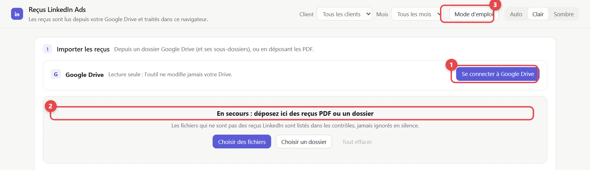
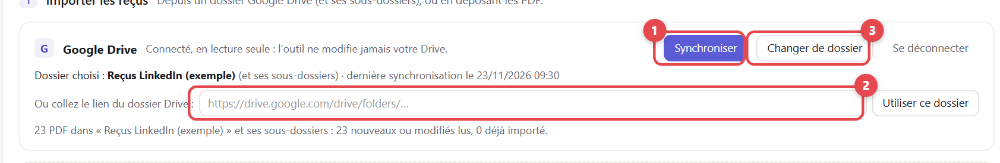
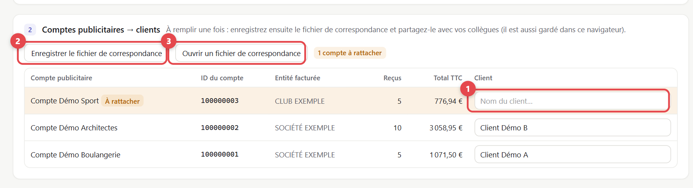
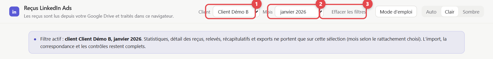
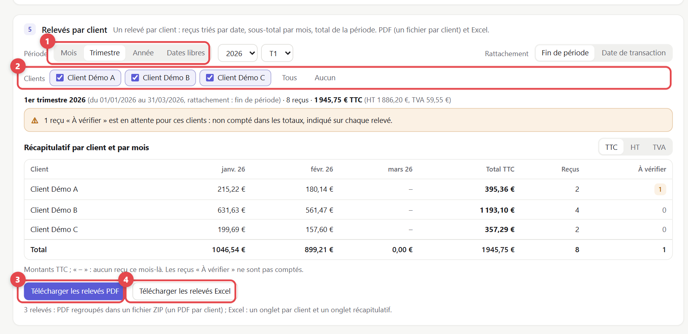
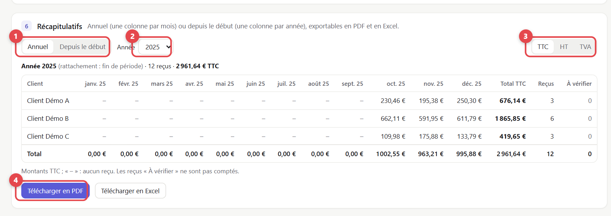
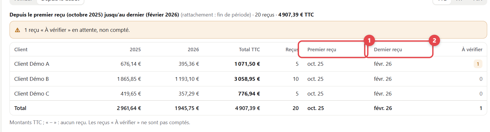
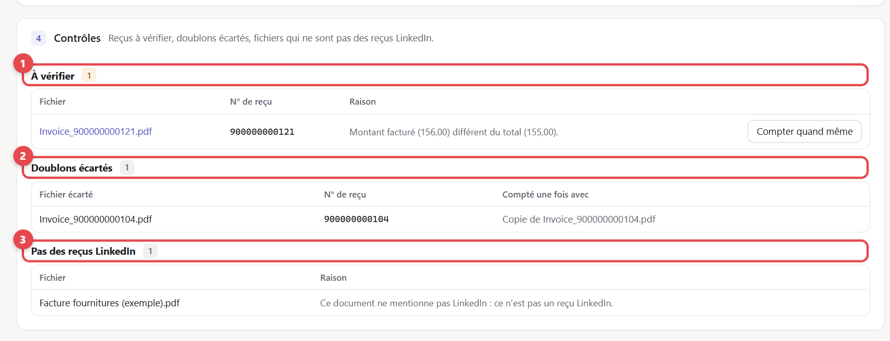
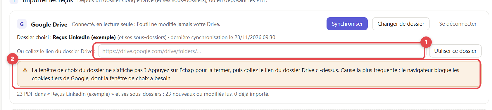

Reçus LinkedIn Ads — Mode d’emploi
Ranger les reçus LinkedIn par client et préparer les relevés, sans rien retaper.
1À quoi sert l’outil
Chaque fois qu’un client paie une publicité sur LinkedIn, LinkedIn envoie un reçu. L’outil lit ces reçus dans votre dossier Google Drive, les range par client et calcule les totaux. Il prépare ensuite, en un clic, des relevés et des récapitulatifs à envoyer ou à archiver. Il n’y a rien à installer : tout se passe dans une page internet.
2Première utilisation
- Ouvrez la page de l’outil : https://eyrobinet.github.io/recus-linkedin/. Ajoutez-la à vos favoris.
- Cliquez sur Se connecter à Google Drive 1. Une fenêtre Google s’ouvre : choisissez votre compte Google, puis acceptez que l’outil voie vos fichiers. L’outil peut seulement lire : il ne modifie, ne déplace et ne supprime jamais rien.
- Choisissez le dossier des reçus LinkedIn. Les sous-dossiers sont lus aussi.
- Si Google affiche Autoriser les cookies, cliquez dessus : sans cela, la fenêtre de choix du dossier ne peut pas s’afficher.
- L’outil lit tous les reçus. Une barre avance pendant la lecture, qui peut prendre une minute.

Si la fenêtre de choix du dossier ne fonctionne pas, vous pouvez donner le dossier par son lien. Ouvrez le dossier dans Google Drive et copiez l’adresse affichée tout en haut de la fenêtre. Collez-la dans le champ 2, puis cliquez sur Utiliser ce dossier.

3Rattacher les comptes LinkedIn aux clients
- Chaque compte LinkedIn trouvé dans les reçus apparaît dans la liste. Ceux qui ne sont rattachés à aucun client sont en orange, avec la mention À rattacher.
- Tapez le nom du client en face de chaque compte 1. Il suffit de le faire une seule fois.
- Cliquez ensuite sur Enregistrer le fichier de correspondance 2, et rangez ce fichier dans un dossier commun. Vos collègues l’ouvrent avec Ouvrir un fichier de correspondance 3 et n’ont rien à retaper.
- Quand vous ajoutez un client, enregistrez à nouveau le fichier et remplacez l’ancien.

4Chaque mois
- Ouvrez l’outil et cliquez sur Se connecter et synchroniser, ou sur Synchroniser si vous êtes déjà connectée. Seuls les nouveaux reçus sont lus.
- En haut de la page, choisissez un client 1 et un mois 2 : toute la page n’affiche plus que ce client et ce mois. Effacer les filtres 3 revient à l’ensemble.

Bon à savoir : un reçu est rangé dans le mois où se termine la période facturée par LinkedIn. Pour le ranger plutôt au jour du paiement, choisissez Date de transaction (dans les parties « Statistiques » ou « Relevés »).
5Relevés et récapitulatifs
Relevé par client (partie 5 de l’outil)
1 Choisissez la période : un mois, un trimestre, une année ou des dates précises. 2 Cochez les clients. 3 Télécharger les relevés PDF donne un fichier par client ; s’il y a plusieurs clients, ils sont réunis dans un dossier compressé (« .zip ») : double-cliquez dessus pour l’ouvrir. 4 La version Excel a un onglet par client.
Chaque relevé contient le nom du client et ses comptes LinkedIn, la période, la liste des reçus par date, un sous-total par mois et le total (HT, TVA, TTC).

Récapitulatifs (partie 6 de l’outil)
- 1 Annuel : une ligne par client, une colonne par mois de l’année choisie 2. Depuis le début : une colonne par année, avec le mois du premier et du dernier reçu de chaque client.
- 3 Montants TTC, HT ou TVA · 4 téléchargement en PDF ou en Excel.


6Comprendre les contrôles (partie 4 de l’outil)
- 1 À vérifier : l’outil a un doute sur un reçu (illisible, incomplet, ou montants qui ne concordent pas). Ce reçu n’est pas compté dans les totaux. Cliquez sur son nom pour l’ouvrir. S’il est correct, cliquez sur Compter quand même. Sinon, téléchargez-le à nouveau depuis LinkedIn.
- 2 Doublons écartés : le même reçu est présent deux fois. Il n’est compté qu’une fois : rien à faire.
- 3 Pas des reçus LinkedIn : un autre document se trouve dans le dossier. Il est simplement mis de côté.

7Problèmes fréquents

8Confidentialité
- Les reçus sont lus directement sur votre ordinateur, dans la page de l’outil. Ils ne sont envoyés nulle part : ni à Tom, ni à un autre site.
- L’outil peut seulement lire votre Google Drive : il ne peut rien modifier, déplacer ni supprimer.
- Quand vous fermez la page, les reçus lus disparaissent de l’outil (ils restent bien sûr dans votre Drive). Seuls le dossier choisi et la correspondance comptes → clients sont gardés sur votre ordinateur.
- Sur un ordinateur partagé, cliquez sur Se déconnecter à la fin.
Les captures de ce mode d’emploi utilisent des données fictives : « Client Démo A, B, C », « Compte Démo… », montants inventés.